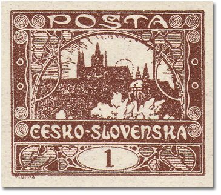
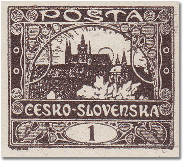
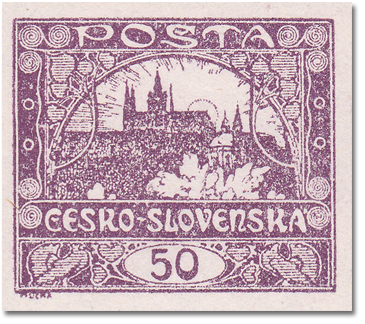
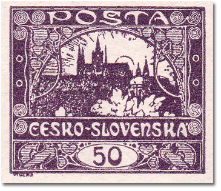

Third design
The third design of the Hradčany issue. The values printed from it are listed below, each with its shades, catalogue numbers, print run and date of issue.
1h – brown
| Shade | POFIS | MERKUR | Plates |
|---|---|---|---|
| brown | 1 | 1 | 2 |
| black-brown | - | 1a | 2 |
Print run: 15 575 000 (imperf. 8 550 000, officially perf. 7 025 000) · Perforation: 13¾ line · Date of issue: 14. 3. 1919 · Plate diagrams


50h – violet
| Shade | POFIS | MERKUR | Plates |
|---|---|---|---|
| violet | 15 | 15 | 2 |
| dark violet | - | 15a | 2 |
Print run: Imperforate 27 314 000 · Perforation: – · Date of issue: 27. 2. 1919 · Plate diagrams

